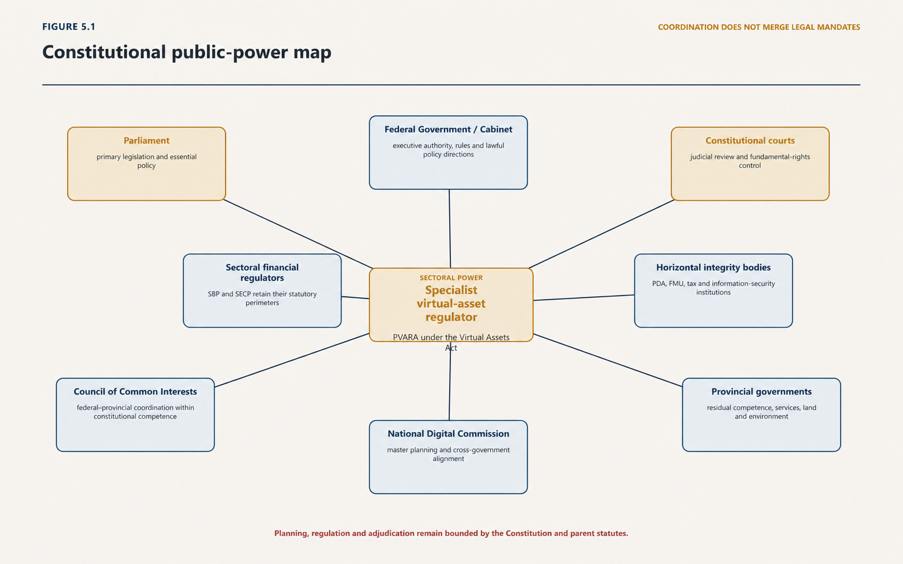

Chapter Five · Part 1
Law: Authority, Interpretation and the Digital Legal Order
Contents
Chapter Summary
1
This chapter defines the digital legal order as a hierarchy of constitutional powers, statutes, delegated instruments, judgments and reviewable administrative decisions. It addresses commencement, savings, classification, cumulative perimeters, territorial connection, comparative reasoning, fundamental rights and electronic proof. Particular attention is given to the difference between enacted law and policy, guidance, websites or historical drafts.
| Law gives technological events public consequence only through a valid source, a competent decision-maker, proved facts, fair procedure and an available remedy. |
|---|
5.1 What Counts as Law
5.1.1 Constitution, statute, delegated legislation and binding judgment
2
Law is the second element, but it is not merely the text of the Virtual Assets Act. In this treatise, Law includes constitutional competence; Acts and historically relevant Ordinances; Rules, Regulations and other delegated instruments; binding judgments; institutional powers and limits; lawful appointments and delegations; administrative procedures; evidence; reasons; sanctions; remedies; and the practical routes through which rights and duties are contested. Law includes hierarchy and time: who may make a rule, through which instrument, from what date, subject to which superior norm and review.
3
This broader conception is necessary because enactment is not self-execution. Parliament may establish an Authority, define a perimeter and confer powers. The resulting order still depends on the Authority being lawfully constituted, its members appointed, its delegations made, its subordinate instruments issued within parent powers, its decisions reasoned, its data obtained lawfully and its sanctions applied with due process. It depends on coordination with institutions whose mandates remain in force. It depends on courts and tribunals being able to identify the controlling text and provide a remedy when authority is exceeded.
4
This is why instrument labels matter. An operative statute, a draft regulation, a historical Ordinance, a qualified unresolved gap and a status requiring verification instrument cannot be placed on the same plane. The distinction is part of the rule of law. A person cannot be legally held to a duty that has not lawfully commenced, although a published draft may justify preparation. Guidance cannot cure a missing statutory power. Review cannot operate coherently unless the source, form and hierarchy of asserted authority are known.
5
Law, finally, provides the framework for public reasons. Where the Constitution, a statute, applicable procedure or public-law doctrine requires reasons, the state must explain why a power applies, how evidence was assessed, what procedure was followed and where review lies. The precise content of that duty must be established for the decision in issue. Its purpose remains central: accountable legal intelligence must be capable of explanation and review rather than operating as opaque control.
5.1.2 Policy, guidance, standards, websites and other non-equivalent materials
6
The FSB's first recommendation begins with appropriate powers, tools and resources; its second demands functionally comprehensive regulation consistent with institutional mandates; its third requires cooperation and coordination.1 Those propositions expose a basic distinction that this treatise will repeatedly enforce: legal power, institutional responsibility and operational capability are related but not identical. A regulator may possess power without staff, data or systems. An institution may have capacity without jurisdiction. Two bodies may each have legitimate powers whose interaction remains unresolved. An intelligent legal order makes those distinctions visible and supplies lawful connections between them.
7
Law also determines the conditions under which policy ambition becomes a public obligation. The Virtual Assets Act contains objectives concerning investor protection, market integrity, financial integrity, responsible innovation and investment.2 These objectives do not all operate in the same way. Some support interpretation; some guide administration; some require detailed Rules or Regulations; some depend on other institutions; and some may remain aspirations until resources and implementation instruments exist. Treating every objective as an immediately enforceable promise would be as misleading as treating it as empty rhetoric. The treatise must identify the legal form and evidential status of each claim.
5.2 Constitutional Authority and Legislative Competence
5.2.1 Federal and provincial allocation
8
Pakistan is a federation whose legislative competences are distributed, not presumed into a single national digital field. Article 142 gives Parliament exclusive authority over matters in the Federal Legislative List, concurrent authority with Provincial Assemblies over criminal law, criminal procedure and evidence, and leaves non-enumerated matters—subject to that concurrent field—to the Provinces. Article 143 makes a competent federal Act prevail over a repugnant provincial Act only to the extent of the repugnancy.3 “Digital”, “blockchain” and “virtual asset” are not self-executing heads of legislative competence. The pith and substance of the regulated matter and its connection to enumerated fields remain controlling.
9
There is a strong federal base for substantial parts of virtual-assets regulation. Part I of the Federal Legislative List includes communications; currency, coinage and legal tender; foreign exchange; the State Bank of Pakistan and banking; insurance; stock exchanges and futures markets whose objects and business are not confined to one Province; corporations with the specified federal connection; import, export and inter-provincial trade; relevant federal taxation; offences, inquiries and statistics connected to federal subjects; and incidental or ancillary matters. Part II includes all regulatory authorities established under federal law, national planning and national economic coordination, inter-provincial matters and coordination, and the Council of Common Interests itself.4
10
Those entries support national rules for fiat-referenced tokens, cross-border transfers, banking exposure, nationally operating exchanges and custodians, securities-like or futures activity, federal corporations, AML/CFT connections, and a federal licensing authority operating under competent legislation. They do not convert every consequence of blockchain use into an exclusively federal matter. Land and local property administration, provincial taxes on services, locally supplied services, provincial consumer remedies, aspects of electricity and environmental administration, and other residual fields may continue to apply according to their own constitutional and statutory bases. Registration by PVARA cannot itself displace a provincial permit, tax or remedy that remains constitutionally applicable.
11
Federalism is therefore an allocation and coordination discipline. Article 144 permits Parliament to legislate on a provincial field for one or more consenting Provinces, subject to the constitutional terms. Articles 146 and 147 allow conditional or unconditional entrustment of functions between Federation and Province, with the latter route requiring Provincial Assembly ratification within sixty days. Articles 148 and 149 govern compliance, provincial interests and specified federal directions. These are legal routes, not reasons to assume unlimited central authority.5
12
Article 151 adds a related national-market concern by protecting freedom of trade, commerce and intercourse throughout Pakistan while allowing Parliament to impose public-interest restrictions by law. A virtual-asset service delivered through a national interface may be technically accessible everywhere, but accessibility does not answer where the service, customer harm, tax event, electricity use, property transfer or enforcement act occurs. The strategy should adopt connecting factors for jurisdiction and cooperation rather than declaring every online act exclusively federal. A national rule may govern the federally regulated service while provincial law governs a cumulative local consequence.
5.2.2 Fundamental rights, legality and public power
13
Two constitutional planning institutions are especially relevant. The Council of Common Interests formulates and regulates policy for Part II of the Federal Legislative List and supervises and controls the related institutions; it is constitutionally composed, responsible to Parliament and subject to meeting and reporting duties. The National Economic Council reviews national economic conditions and formulates plans concerning financial, commercial, social and economic policy while attending to balanced development and regional equity.6 The National Digital Commission’s statutory composition—Prime Minister, Chief Ministers and principal federal economic, security and regulatory actors—creates an important whole-of-government forum. It does not replace the CCI or NEC where their constitutional functions are engaged.
14
This matters for digital-assets strategy in three ways. First, PVARA is a regulatory authority established under federal law, making the Part II architecture and CCI relationship a question that must be addressed, not ignored. Second, the National Digital Masterplan is national planning and includes finance and the digital economy, so constitutional planning institutions should be mapped into its approval and implementation path where their fields are engaged. Third, provincial participation in the Digital Commission is valuable but is not a legal substitute for provincial legislation, consent, entrustment, fiscal authority or the CCI’s constitutional jurisdiction.
15
The correct response is not to route every administrative detail through every intergovernmental body. It is to create a competence schedule. Each policy measure should identify its pith and substance, federal-list entry or provincial basis, implementing institution, territorial reach, provincial dependency, CCI or NEC relevance, and conflict rule. A national licensing rule and a provincial energy approval may then operate cumulatively. A genuine repugnancy can be analysed under Article 143. A shared programme can use consent or entrustment. The result is more executable than either central overclaim or federal paralysis.
16
Constitutional consequence. Pakistan may build a national virtual-assets perimeter, but it must do so through enumerated federal powers, constitutional planning institutions and lawful coordination with residual provincial fields. National importance is not an independent head of legislative competence.
5.3 Legislative Form, Commencement, Savings and Transition
5.3.1 Enactment, commencement and delegated authority
17
Legislation becomes part of the working legal order through form and time. An Act may commence on assent, publication or a date fixed by notification; delegated legislation must be made by the authorised institution, within the parent power and through the prescribed form. Publication establishes a public text, but it does not answer every question of commencement, territorial reach or application to prior conduct. Those questions must be resolved from the instrument itself, the parent Act, applicable interpretation law and constitutional requirements. A regulator's website, press release or consultation paper may help readers locate or understand an instrument. It cannot supply a missing statutory power or silently amend the operative text.
18
For Pakistan's virtual-assets order this discipline has immediate consequences. The Virtual Assets Act 2026 is the parent statute. The Pakistan Virtual Asset Regulatory Authority Regulations 2026 and the activity-specific Regulations, described by the Author as notified, are the present delegated baseline. Earlier drafts remain legislative history. Exact Gazette, S.R.O. and provision-level pinpoints for the final notified texts must be checked against authenticated copies before publication; that unresolved bibliographic task does not justify treating the former drafts as current law.
5.3.2 Savings, accrued positions and prospective regulation
19
Savings and transition provisions prevent legal change from being mistaken for legal erasure. They may preserve institutions, appointments, applications, proceedings, liabilities or instruments created under an earlier enactment. Their exact reach depends on text. A savings clause does not ordinarily create a licence that never existed, excuse prior unlawful conduct, or convert a provisional permission into an unconditional permanent entitlement. Nor does repeal necessarily extinguish accrued liabilities or pending proceedings where general interpretation rules or an express saving preserve them.
20
Transition should therefore be analysed claim by claim. The relevant questions are: what legal position existed immediately before the new regime; what provision preserves, terminates or modifies it; for how long; subject to what application or disclosure duty; and with what consequence for customers and third parties? This method is especially important for incumbent service providers and NOC holders. Continuity of a process is not the same as grandfathering of a substantive licence.
5.4 Classification, Characterisation and Functional Regulation
5.4.1 Classifying the asset and the activity
21
Digital-asset disputes often begin with a demand for a single noun: currency, commodity, security, property, payment instrument or data. Law frequently requires a more exact sequence. The asset must be described technically; the legal rights or expectations attached to it must be identified; the transaction must be characterised; and the actor's function must be mapped to the statute whose conditions are said to apply. The same token may be held as investment property, transferred as consideration, used in a regulated service or offered through an arrangement that creates additional legal duties. Classification is context-sensitive without being arbitrary.
22
Functional regulation responds to conduct rather than branding. Custody turns on control of customer assets and keys; exchange turns on dealing or arranging; transfer services turn on transmitting value; an offer turns on how an interest is issued, promoted and sold; and a stable-value arrangement turns on reserve, redemption and payment features. The legal conclusion must follow the elements of the controlling provision. Market vocabulary can provide evidence, but it cannot replace the statutory test.
5.4.2 Overlap and cumulative application
23
Several perimeters may apply cumulatively. A PVARA licence addresses the virtual-asset activity within the Act. It does not, without an express legal rule, authorise deposit-taking, foreign-exchange business, payment-system operation, securities dealing, telecommunications activity or a provincial service that another law regulates. Conversely, a bank, securities intermediary or payment institution does not acquire permission for a specialised virtual-asset service merely from its existing status. Institutional coordination is required precisely because overlap is legally possible.
24
The disciplined response is not to choose one regulator by intuition. It is to identify the relevant function, legal element, competent institution and potential conflict. Where two duties can operate together, both should be observed. Where they cannot, the hierarchy, specific text, later enactment, constitutional allocation and any express coordination rule must be analysed. Legal certainty comes from stated reasons, not from pretending that digital activity belongs to a single field.
5.5 Jurisdiction, Territory and Connecting Factors
5.5.1 Territorial reach in networked markets
25
An interface accessible in Pakistan does not answer every jurisdictional question. Relevant connections may include the customer's location, the provider's establishment, solicitation directed at Pakistan, the place of management or control, custody of assets, the banking rail, the place of contractual performance, the location of systems or evidence, and the place where harm occurs. A statute may select some of these factors expressly. Courts and regulators must not invent unlimited extraterritoriality from the global character of a network.
26
Foreign providers create a practical enforcement problem but not a licence to abandon legality. Market-access conditions, local representation, information duties, cooperation arrangements, blocking or warning powers, and proceedings against locally reachable assets may each be available if supported by law. A proportionate approach distinguishes incidental overseas accessibility from sustained Pakistan-facing solicitation and service. It also preserves notice and a route to challenge territorial assertions.
5.5.2 Comparative law and domestic authority
27
Foreign statutes, judgments and regulatory practice can clarify design choices and reveal recurring risks. They are not operative Pakistani law. United States classifications arise from United States statutes, agency mandates and federal-state structures; European Union market rules arise from a supranational legal order; and specialised financial-centre regimes may rest on constitutional and institutional arrangements Pakistan does not share. Comparative reasoning is strongest when it isolates the function and rationale of a rule, then tests whether Pakistan has the competence, text and capability to adopt an equivalent.
5.6 Rights, Reasons and Administrative Fairness
5.6.1 Public power and affected rights
28
Licensing, inspection, data demands, asset restraints, administrative penalties and public warnings may affect property, business, privacy, reputation and access to justice. The precise constitutional right and permissible limitation depend on the measure. The recurring legal requirements are authority, a legitimate statutory purpose, rational connection, fair procedure and proportionality where the applicable doctrine requires it. Digital risk does not suspend those requirements; the speed and opacity of automated systems make them more important.
5.6.2 Notice, hearing and reasons
29
A fair process normally begins with intelligible notice of the case to be met, access to material sufficient to answer it, an unbiased decision-maker, a real opportunity to respond and a decision made under the correct legal standard. Urgent interim action may be justified where statute permits and risk demands, but urgency should be followed by prompt review. Reasons should identify the power, material facts, evidential assessment, response to central submissions, conclusion and available remedy. A template or unexplained risk score is not a substitute for an accountable decision.
30
Reasons also discipline inter-agency action. Where one body refers information and another imposes a consequence, the record should identify each institution's legal capacity. Confidential intelligence may require protection, but secrecy cannot become a universal answer to legality, relevance and review. Courts and tribunals need a record capable of testing whether the decision-maker acted within power.
5.7 Evidence, Proof and Legal Truth
5.7.1 Technical records as evidence
31
Ledger entries, wallet addresses, transaction hashes, device images, exchange records, bank transfers and identity data can establish parts of an event. None is self-interpreting. A transaction hash may prove that a network accepted a state transition; it does not alone prove the human identity behind an address, beneficial ownership, lawful authority, contractual purpose or knowledge. Attribution requires a reasoned evidential chain linking technical facts to persons and legal elements.
5.7.2 Authenticity, integrity and chain of custody
32
Electronic evidence should be preserved with provenance: who acquired it, under what power or consent, by what method, at what time, with what integrity checks, and how it was stored and analysed. Screenshots and explorer pages may be useful leads, but reproducible queries, authenticated provider records, device evidence and documented forensic methods offer stronger foundations. Expert evidence should separate observation from inference and disclose material limitations, including address clustering assumptions and the possibility of compromised credentials.
33
Proof remains matched to the proceeding. A supervisory information request, an interim protective measure, an administrative penalty and a criminal conviction do not necessarily use the same threshold or allocation of burden. The regulator must identify the legal standard and evidence supporting each required element. Code can assist collection and analysis; law determines admissibility, weight, burden and consequence.
5.8 Pakistan’s Digital, Electronic and ICT Statutory Family
5.8.1 Integration across general and sectoral laws
34
The Digital Nation Pakistan Act 2025 does not merely establish another technology body. It creates a statutory planning system with three connected levels: the National Digital Commission, the Pakistan Digital Authority and the National Digital Masterplan. The Commission supplies political and intergovernmental direction and approval. The PDA supplies expert preparation, coordination, standards, monitoring and implementation. The Masterplan supplies the central framework to which identified entities and digital initiatives are to align.7
35
The Commission is chaired by the Prime Minister and includes all Provincial Chief Ministers; the federal ministers responsible for information technology, planning, finance, commerce, interior, economic affairs and information; senior leadership from FBR, NADRA, PTA, SECP and SBP; and the PDA Chairperson as secretary. This composition makes it capable of exposing conflicts across monetary, market, fiscal, identity, communications, security, economic and provincial institutions. Its functions include approval of the Masterplan and implementation plans, strategic direction and governance for the PDA, coordination, alignment directives, resource questions and responses to non-compliance or exceptions.
36
The PDA is a statutory body corporate, not a policy unit within a ministry. It develops, implements, monitors and updates the Masterplan; facilitates coordination; creates monitoring and evaluation; reviews digital public-entity projects; advises the concerned Division on laws, rules, regulations and policies; and carries assigned oversight and standard-setting responsibilities. Its virtual-assets and emerging-technology remit is expressly limited by the requirement to avoid overlap with another regulator’s mandate and conflict with existing law. That proviso is a rule of statutory conduct, not a courtesy.
37
Institutional capacity and accountability sit alongside mandate. The Act prescribes the PDA’s leadership structure and tenure, allows removal only through its stated route, establishes an Oversight Committee, and requires budget, audit and annual reporting. Those features should be read as governance controls, not administrative detail. A body able to set national standards, review public projects and report non-compliance needs declared conflicts, decision records, secure information governance, procurement discipline and performance measures that distinguish adoption from lawful outcome. Independence from ad hoc pressure and accountability for statutory performance are complementary.
38
Section 11 gives the Masterplan defined legal content. It is to be developed and proposed by the PDA and approved by the Commission. It must include a strategic framework; sectoral plans, including finance; a digital economy development plan; implementation plans stating projects, resources, timelines and risk-management strategies; technology standards and reference architectures; and governance frameworks. Development requires consultation with sector bodies, regulators, federal entities and Provincial Governments. Annual review and Commission-approved amendment preserve adaptation without allowing continual informal change.8
39
Section 12 then connects plan to administration. Identified entities are to align policies, operations and digital initiatives with the Masterplan and develop alignment plans. The PDA monitors compliance, reports, recommends corrective measures and may escalate non-compliance. Ministries, Divisions, departments and other bodies must cooperate within the Act. Sections 13–16 add fund, budget, audit and annual-report duties, including key performance indicators and Masterplan progress, and require public reporting through the website.
5.8.2 Fragmentation, overlap and institutional handoffs
40
The resulting public-power map is not a hierarchy in which the PDA commands every regulator. It is a set of legally bounded relationships.
41
See Figure 5.1 for the constitutional public-power map developed in the wider digital-order analysis.

42
The arrows represent legally possible or required relations, not a transfer of jurisdiction. The CCI and NEC retain constitutional functions. Sector regulators retain their parent-statute mandates. Provincial participation in the Commission does not surrender provincial competence. Judicial review remains governed by the Constitution. And federal executive action still travels through Article 99 and the Rules of Business even when the policy subject is digital.
43
The Act also imposes a discipline of evidence. A Masterplan implementation claim should be supported by an approved plan, responsible entity, alignment instrument, funded project, milestone and monitoring record. Commission approval should be identifiable. Standards and directives should disclose their statutory basis, approvals, effective version and relationship to sectoral law. Without those records, institutional activity may be useful, but its legal status remains uncertain.
44
Constitutional consequence. The Digital Nation Act creates an approval, implementation and accountability chain. It coordinates power without amalgamating it. Its success depends on authenticated instruments, recorded allocations and measurable alignment—not on treating the PDA’s broad purpose as an unlimited regulatory mandate.
5.9 Integration Principles
5.9.1 A legal sequence for digital-asset questions
45
A coherent legal analysis can be stated as a sequence. First identify the technical event and actor. Second identify the asserted right, duty or public power. Third locate the controlling primary or delegated source and establish its status at the relevant time. Fourth apply classification, jurisdiction, evidence and procedural requirements. Fifth reconcile cumulative regimes and institutional mandates. Sixth state the consequence and available remedy. Uncertainty should be located at the step where it arises rather than converted into a general claim that the law is unclear.
5.9.2 The rule-of-law contribution
46
This sequence connects Code, Law and Capital. Code explains what occurred and where practical control sat. Law supplies authority, characterisation, procedure and remedy. Capital explains the economic stake and distribution of risk. The value of the method is not taxonomic elegance. It prevents a technical feature, regulatory objective or market claim from silently doing the work of a legal rule. Pakistan's digital legal order will be credible when institutions can show the source, reasoning, evidence and review route for the consequences they impose.
Chapter 5 Conclusion
47
The digital legal order is not a catalogue of statutes: it is a structure of authority, interpretation, rights, duties, evidence and remedies through which technological facts acquire legal consequence.
Footnotes
- ↑ Financial Stability Board, High-level Recommendations for the Regulation, Supervision and Oversight of Crypto-asset Activities and Markets: Final Report (17 July 2023) recs 1–3 <https://www.fsb.org/2023/07/high-level-recommendations-for-the-regulation-supervision-and-oversight-of-crypto-asset-activities-and-markets-final-report/> accessed 26 August 2026.
- ↑ Virtual Assets Act 2026 (Act No XIII of 2026) (‘VAA’), Gazette of Pakistan, Extraordinary, Part I, 5 March 2026, 227, preamble and s 9(1).
- ↑ Constitution of the Islamic Republic of Pakistan 1973 (‘Constitution’), arts 141–144; Jawwad S Khawaja v Federation of Pakistan (Constitution Petition Nos 24–28 and 30 of 2023, Supreme Court of Pakistan, 9 January 2024) PLD 2024 SC 337, para 64.
- ↑ Constitution (n 3), Fourth Schedule, Federal Legislative List, Part I entries 7–10, 27–31, 43–55 and 56–59 as relevant, and Part II entries 6–8 and 13–18. The specific legal basis of any measure must be tested by its true subject and effect; the list is not a conclusion that every virtual-asset measure falls within every cited entry.
- ↑ Constitution (n 3), arts 144 and 146–149.
- ↑ Constitution (n 3), arts 153–156 and Fourth Schedule, Federal Legislative List, Part II entries 6–8 and 13–18.
- ↑ Digital Nation Pakistan Act 2025 (Act No I of 2025), ss 3–12.
- ↑ Digital Nation Pakistan Act 2025 (n 7), s 11(1)–(6). The Act’s definition of ‘Masterplan’ includes the strategic framework, sectoral plans, digital economy development plan, implementation plans and governance frameworks approved under s 11.